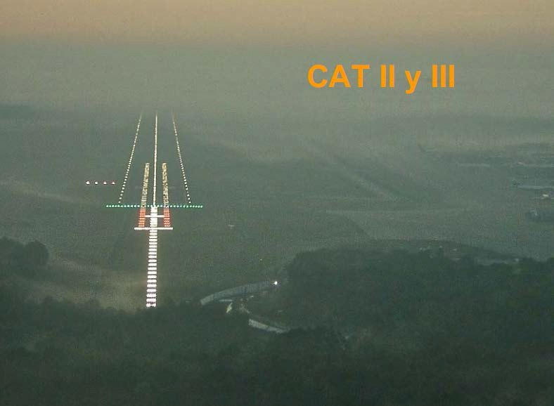
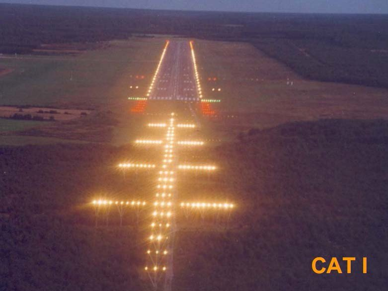
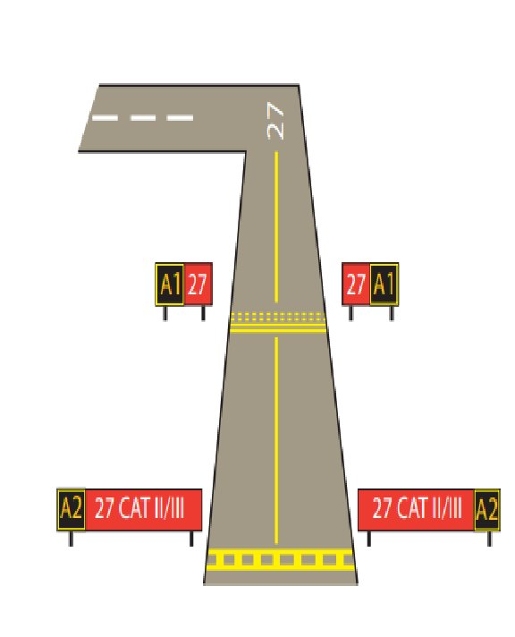
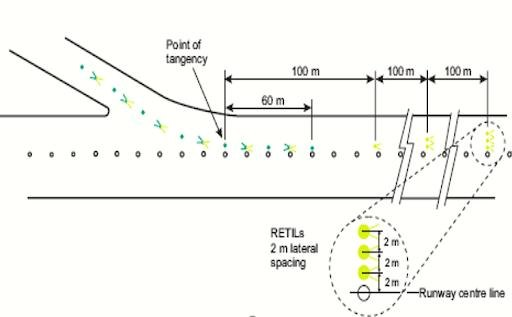

Module 1 · LVO Concepts
Lesson 03: The Aerodrome: Lighting, Signs and LVP
Lesson narration
Checking for narration…
Learning objectives
- Recognise the runway and taxiway lighting used in LVO.
- Identify stop bars, CAT II/III holding positions and RETILs.
- Explain the ILS critical and sensitive areas.

Approach and runway lighting

- Runway edge lights — white; on ILS runways without centreline lights, the last 600 m (or last third) may be yellow (caution zone). Runway end lights are red.
- Runway centreline lights — white; colour-coded alternating red and white from 900 m before the runway end, and all red for the last 300 m.
- Touchdown zone lights — required on runways used in low visibility; from the threshold for 900 m or to the mid-point, whichever is less.
- Taxiway centreline lights — green; blue edge lights on minor taxiways and aprons. Green lead-off lights may guide to an exit; lead-on lights are lit only with a clearance.
Stop bars and holding positions
Never
Never cross a lighted red stop bar — even if cleared by ATC. Stop and ask.

- CAT II/III runway-holding positions are set farther back from the runway than CAT I positions, to keep aircraft out of the ILS critical and sensitive areas.
- A surface movement guidance and control system (SMGCS) may switch taxiway centreline sections and stop bars to guide aircraft along their cleared route.
Rapid exit taxiway indicator lights

ILS protection
- ILS critical area — around the localiser and glide path antennas; vehicles and aircraft are excluded during ILS operations.
- ILS sensitive area — beyond the critical area; movement is controlled to prevent interference.
- Obstacle free zone (OFZ) — kept clear of all obstacles above the inner runway strip.
With LVP in force, ATC increases spacing so that a landing aircraft is not disturbed by an aircraft in the sensitive area.
Key takeaways
- Centreline lights: red/white from 900 m to go, all red last 300 m.
- TDZ lights: required for LVO runways; edge lights may be yellow in the last 600 m.
- Never cross a lit red stop bar; CAT II/III holding positions are farther back.
- ILS critical and sensitive areas protect the signal — LVP increase spacing.
Knowledge check
ATC clears you to cross a runway, but the stop bar in front of you is still lit red. What do you do?